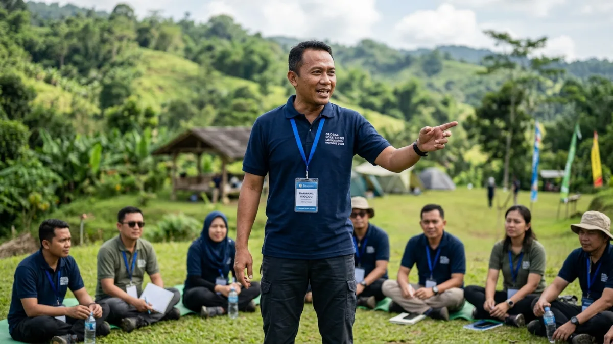

Tujuan outbound untuk membangun kerja sama dan kepemimpinan dicapai melalui permainan kelompok yang menuntut koordinasi, pembagian peran, dan pengambilan keputusan bersama di bawah bimbingan fasilitator.
DAFTAR ISI
1. Apa Tujuan Outbound dalam Konteks Kerja Sama Tim?
Tujuan outbound dalam konteks kerja sama tim adalah melatih peserta untuk saling percaya, berkomunikasi efektif, dan menyelesaikan tantangan bersama tanpa mengandalkan satu individu saja.
Kerja sama tim dalam outbound biasanya dilatih melalui permainan yang secara sengaja dirancang agar tidak bisa diselesaikan sendirian.
Peserta dipaksa untuk saling bergantung, mendengarkan pendapat rekan, dan menyepakati strategi bersama.
Proses inilah yang membedakan outbound dari aktivitas rekreasi biasa, karena setiap permainan memiliki tujuan pembelajaran spesifik terkait dinamika kelompok.
Beberapa indikator kerja sama tim yang biasanya menjadi fokus outbound:
- Kemampuan mendengarkan dan menghargai pendapat anggota lain.
- Kesediaan berbagi peran dan tanggung jawab.
- Kecepatan menyelesaikan konflik kecil yang muncul selama aktivitas.
2. Bagaimana Outbound Membangun Kepemimpinan Peserta?
Outbound membangun kepemimpinan peserta melalui simulasi yang mengharuskan seseorang mengambil peran sebagai pemimpin, membuat keputusan cepat, dan bertanggung jawab atas hasil kerja timnya.
Dalam banyak program outbound, fasilitator sengaja merotasi peran pemimpin kelompok pada setiap sesi permainan.
Tujuannya agar setiap peserta merasakan langsung tantangan mengambil keputusan di bawah tekanan waktu, mengelola perbedaan pendapat, serta mempertanggungjawabkan hasil kerja kelompok.
Pendekatan ini dianggap lebih efektif dibandingkan pelatihan kepemimpinan berbasis teori semata, karena peserta belajar dari pengalaman langsung yang kemudian direfleksikan bersama fasilitator.

Simulasi kepemimpinan melatih peserta mengambil keputusan dan bertanggung jawab atas hasil kerja timnya.3. Mengapa Sesi Refleksi Penting untuk Mencapai Tujuan Outbound?
Sesi refleksi atau debriefing penting karena tanpa proses ini, pengalaman fisik selama outbound berisiko berhenti sebagai kesenangan sesaat tanpa pembelajaran yang melekat pada perilaku kerja.
Debriefing biasanya dilakukan setelah setiap sesi permainan selesai. Fasilitator mengajak peserta mendiskusikan apa yang terjadi, mengapa strategi tertentu berhasil atau gagal, dan bagaimana pembelajaran tersebut dapat diterapkan kembali di lingkungan kerja.
Kajian mengenai pelatihan tim pada 2025 menegaskan bahwa debriefing terstruktur membantu peserta merefleksikan aspek teknis sekaligus dinamika interaksi tim.
Sementara pemetaan bukti pada 2026 juga menunjukkan bahwa proses refleksi ini penting untuk mengembangkan keterampilan teknis, nonteknis, dan rasa percaya diri peserta secara bersamaan.
4. Apa Saja Contoh Aktivitas yang Mendukung Tujuan Ini?
Contoh aktivitas yang mendukung tujuan kerja sama dan kepemimpinan meliputi permainan tali, simulasi menyeberangkan kelompok melewati rintangan, dan tantangan yang mengharuskan pergantian peran pemimpin.
Beberapa contoh permainan yang sering digunakan:
- Human knot — melatih koordinasi dan komunikasi dalam menyelesaikan simpul manusia.
- Blindfold trust walk — membangun kepercayaan antaranggota melalui panduan verbal.
- Tower building challenge — melatih perencanaan strategi dan pembagian tugas.
- Leadership relay — merotasi peran pemimpin pada setiap tahap permainan.
5. Apa yang Membuat Tujuan Outbound Gagal Tercapai?
Tujuan outbound berisiko gagal tercapai apabila aktivitas dipilih tanpa mempertimbangkan kebutuhan tim, fasilitator kurang kompeten dalam memandu refleksi, atau kegiatan hanya berhenti pada aspek hiburan.
Beberapa penyebab umum kegagalan mencapai tujuan outbound:
- Aktivitas dipilih berdasarkan tren tanpa menyesuaikan dengan masalah nyata yang dihadapi tim.
- Tidak ada sesi refleksi sehingga pengalaman lapangan tidak diterjemahkan menjadi pembelajaran.
- Fasilitator kurang berpengalaman dalam mengelola dinamika kelompok yang kompleks.
- Tidak ada tindak lanjut pascakegiatan untuk memastikan perubahan perilaku benar-benar terjadi di tempat kerja.
6. Kesimpulan
Tujuan outbound untuk membangun kerja sama dan kepemimpinan hanya dapat tercapai jika aktivitas dirancang dengan sasaran pembelajaran yang jelas dan didukung sesi refleksi yang terstruktur.
Sebelum menyelenggarakan outbound, tentukan terlebih dahulu keterampilan spesifik yang ingin dikembangkan, lalu pilih permainan dan fasilitator yang sesuai dengan tujuan tersebut.